Rotation of Axes
Learning Objectives
- Using rotation of axes formulas.
- Identify conic sections by their equations. (IA 11.4.3)
Objective 1: Using rotation of axes formulas.
If a point on the Cartesian plane is represented on a new coordinate plane where the axes of rotation are formed by rotating an angle from the positive x -axis, then the coordinates of the point with respect to the new axes are
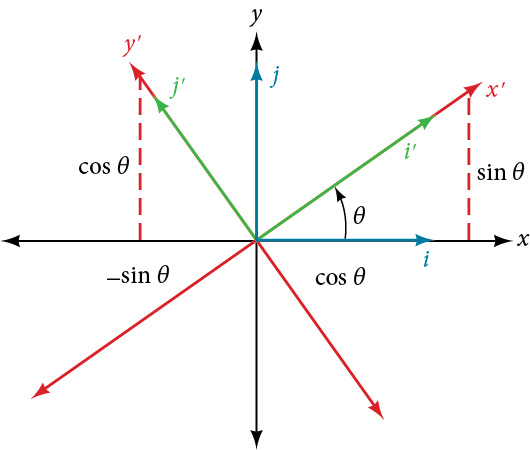
The following rotations of axes formulas define the relationship between (x,y) and (x’,y’):
Using rotation of axes formulas.
Find a new representation of the given equation after rotating through the given angle.
Solution
| Find x and y using the rotation of axes formulas, substitute θ=45º. | |||
|
|||
| Substitute the expressions for x and y into the given equation and simplify. | |||
| Foil each term. | |||
| Multiply by 2 to get rid of the fraction. | |||
| Combine like terms. | |||
| Write the equations with x′ and y′ in standard form. | Set equal to 1. |
Practice Makes Perfect
Using rotation of axes formulas:
Find a new representation of the given equation after rotating through the given angle. Use the steps outlined to assist you in your work.
| Find x and y using the rotation of axes formulas, substitute θ=45º. |
| Substitute the expressions for x and y into the given equation and simplify. |
| Write the equations with x′ and y′ in standard form. |
Objective 2: Identify conic sections by their equations. (IA 11.4.3)
We can identify a conic from its equations by looking at the signs and coefficients of the variables that are squared.
| Conic | Characteristics of and terms | Example |
|---|---|---|
| Parabola | Either OR Only one variable is squared. | |
| Circle | and terms have the same coefficients | |
| Ellipse | and terms have the same sign, different coefficients | |
| Hyperbola | and terms have different signs, different coefficients |
Identify conic sections by their equations.
- ⓐ
- ⓑ
- ⓒ
- ⓓ
Solution
- ⓐ
Parabola: only one variable is squared. - ⓑ
Hyperbola: and have different signs and different coefficients. - ⓒ
Ellipse: and have the same signs and different coefficients. - ⓓ
Circle: and have the same signs and the same signs coefficients.
Practice Makes Perfect
Identify conic sections by their equations.
As we have seen, conic sections are formed when a plane intersects two right circular cones aligned tip to tip and extending infinitely far in opposite directions, which we also call a cone. The way in which we slice the cone will determine the type of conic section formed at the intersection. A circle is formed by slicing a cone with a plane perpendicular to the axis of symmetry of the cone. An ellipse is formed by slicing a single cone with a slanted plane not perpendicular to the axis of symmetry. A parabola is formed by slicing the plane through the top or bottom of the double-cone, whereas a hyperbola is formed when the plane slices both the top and bottom of the cone. See Figure 1.
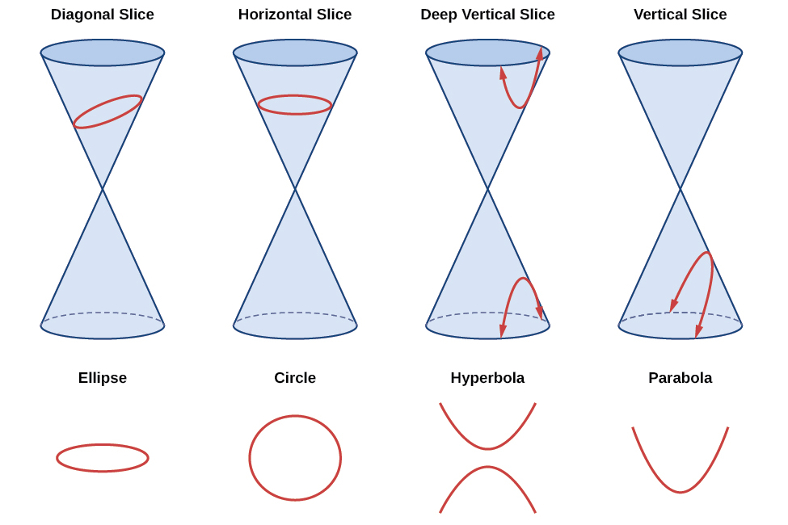
Ellipses, circles, hyperbolas, and parabolas are sometimes called the nondegenerate conic sections, in contrast to the degenerate conic sections, which are shown in Figure 2. A degenerate conic results when a plane intersects the double cone and passes through the apex. Depending on the angle of the plane, three types of degenerate conic sections are possible: a point, a line, or two intersecting lines.

Identifying Nondegenerate Conics in General Form
In previous sections of this chapter, we have focused on the standard form equations for nondegenerate conic sections. In this section, we will shift our focus to the general form equation, which can be used for any conic. The general form is set equal to zero, and the terms and coefficients are given in a particular order, as shown below.
where and are not all zero. We can use the values of the coefficients to identify which type conic is represented by a given equation.
You may notice that the general form equation has an term that we have not seen in any of the standard form equations. As we will discuss later, the term rotates the conic whenever is not equal to zero.
| Conic Sections | Example |
|---|---|
| ellipse | |
| circle | |
| hyperbola | |
| parabola | |
| one line | |
| intersecting lines | |
| parallel lines | |
| a point | |
| no graph |
Identifying a Conic from Its General Form
Identify the graph of each of the following nondegenerate conic sections.
- ⓐ
- ⓑ
- ⓒ
- ⓓ
Solution
- ⓐ Rewriting the general form, we have
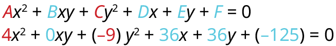
and so we observe that and have opposite signs. The graph of this equation is a hyperbola.
- ⓑ Rewriting the general form, we have
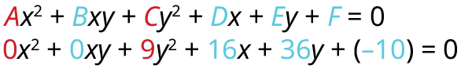
and We can determine that the equation is a parabola, since is zero.
- ⓒ Rewriting the general form, we have
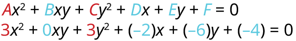
and Because the graph of this equation is a circle.
- ⓓ Rewriting the general form, we have
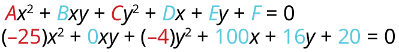
and Because and the graph of this equation is an ellipse.
Finding a New Representation of the Given Equation after Rotating through a Given Angle
Until now, we have looked at equations of conic sections without an term, which aligns the graphs with the x- and y-axes. When we add an term, we are rotating the conic about the origin. If the x- and y-axes are rotated through an angle, say then every point on the plane may be thought of as having two representations: on the Cartesian plane with the original x-axis and y-axis, and on the new plane defined by the new, rotated axes, called the x'-axis and y'-axis. See Figure 3.
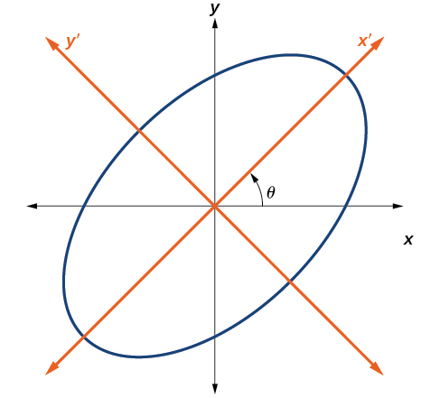
We will find the relationships between and on the Cartesian plane with and on the new rotated plane. See Figure 4.
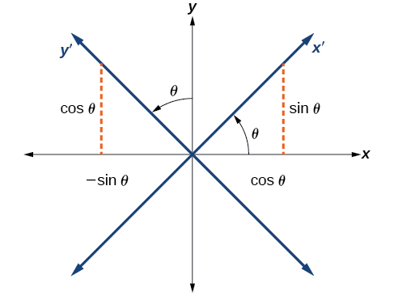
The original coordinate x- and y-axes have unit vectors and The rotated coordinate axes have unit vectors and The angle is known as the angle of rotation. See Figure 5. We may write the new unit vectors in terms of the original ones.
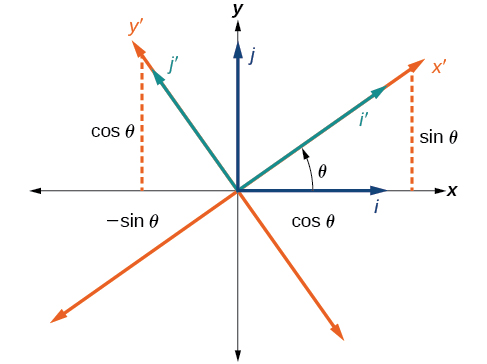
Consider a vector in the new coordinate plane. It may be represented in terms of its coordinate axes.
Because we have representations of and in terms of the new coordinate system.
Finding a New Representation of an Equation after Rotating through a Given Angle
Find a new representation of the equation after rotating through an angle of
Solution
Find and where and
Because
and
Substitute and into
Simplify.
Write the equations with and in the standard form.
This equation is an ellipse. Figure 6 shows the graph.
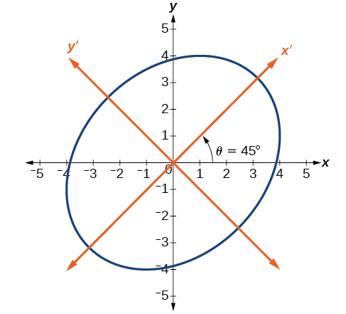
Writing Equations of Rotated Conics in Standard Form
Now that we can find the standard form of a conic when we are given an angle of rotation, we will learn how to transform the equation of a conic given in the form into standard form by rotating the axes. To do so, we will rewrite the general form as an equation in the and coordinate system without the term, by rotating the axes by a measure of that satisfies
We have learned already that any conic may be represented by the second degree equation
- If then is in the first quadrant, and is between
- If then is in the second quadrant, and is between
- If then
Rewriting an Equation with respect to the x′ and y′ axes without the x′y′ Term
Rewrite the equation in the system without an term.
Solution
First, we find See Figure 7.
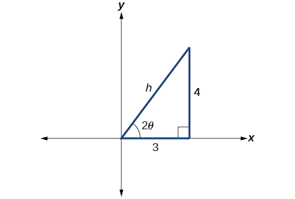
So the hypotenuse is
Next, we find and
Substitute the values of and into and
and
Substitute the expressions for and into in the given equation, and then simplify.
Write the equations with and in the standard form with respect to the new coordinate system.
Figure 8 shows the graph of the ellipse.
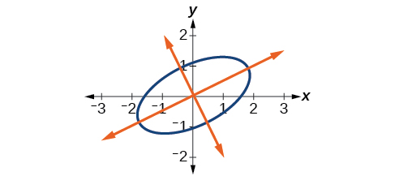
Graphing an Equation That Has No x′y′ Terms
Graph the following equation relative to the system:
Identifying Conics without Rotating Axes
Now we have come full circle. How do we identify the type of conic described by an equation? What happens when the axes are rotated? Recall, the general form of a conic is
If we apply the rotation formulas to this equation we get the form
It may be shown that The expression does not vary after rotation, so we call the expression invariant. The discriminant, is invariant and remains unchanged after rotation. Because the discriminant remains unchanged, observing the discriminant enables us to identify the conic section.
Identifying the Conic without Rotating Axes
Identify the conic for each of the following without rotating axes.
- ⓐ
- ⓑ
Solution
- ⓐ Let’s begin by determining and
Now, we find the discriminant.
Therefore, represents an ellipse.
- ⓑ Again, let’s begin by determining and
Now, we find the discriminant.
Therefore, represents an ellipse.
Key Equations
| General Form equation of a conic section | |
| Rotation of a conic section | |
| Angle of rotation |
Key Concepts
- Four basic shapes can result from the intersection of a plane with a pair of right circular cones connected tail to tail. They include an ellipse, a circle, a hyperbola, and a parabola.
- A nondegenerate conic section has the general form where and are not all zero. The values of and determine the type of conic. See Example 3.
- Equations of conic sections with an term have been rotated about the origin. See Example 4.
- The general form can be transformed into an equation in the and coordinate system without the term. See Example 5 and Example 6.
- An expression is described as invariant if it remains unchanged after rotating. Because the discriminant is invariant, observing it enables us to identify the conic section. See Example 7.
Section Exercises
Verbal
What effect does the term have on the graph of a conic section?
Solution
The term causes a rotation of the graph to occur.
If the equation of a conic section is written in the form and what can we conclude?
If the equation of a conic section is written in the form and what can we conclude?
Solution
The conic section is a hyperbola.
Given the equation what can we conclude if
For the equation the value of that satisfies gives us what information?
Solution
It gives the angle of rotation of the axes in order to eliminate the term.
Algebraic
For the following exercises, determine which conic section is represented based on the given equation.
Solution
parabola
Solution
hyperbola
Solution
ellipse
Solution
parabola
Solution
parabola
Solution
ellipse
For the following exercises, find a new representation of the given equation after rotating through the given angle.
Solution
Solution
For the following exercises, determine the angle that will eliminate the term and write the corresponding equation without the term.
Solution
Solution
Solution
Solution
Graphical
For the following exercises, rotate through the given angle based on the given equation. Give the new equation and graph the original and rotated equation.
Solution
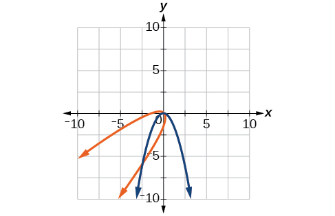
Solution
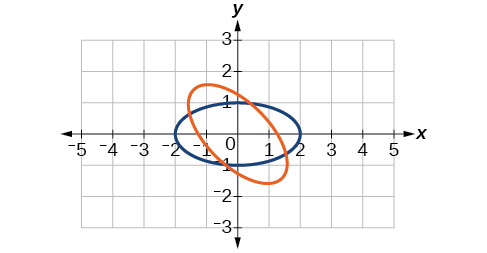
Solution
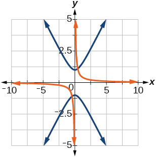
Solution
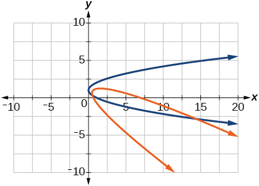
For the following exercises, graph the equation relative to the system in which the equation has no term.
Solution
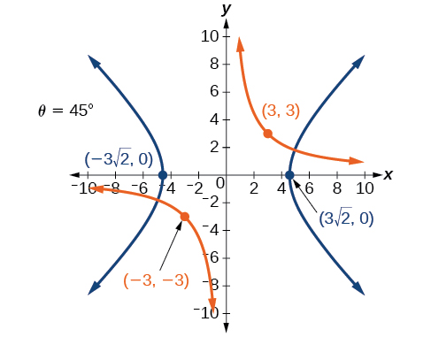
Solution
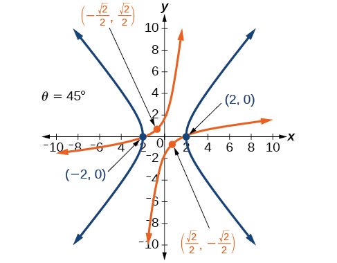
Solution
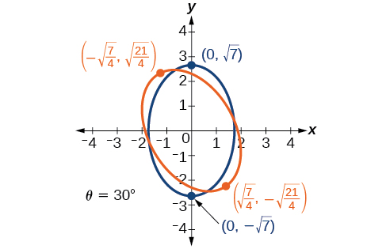
Solution
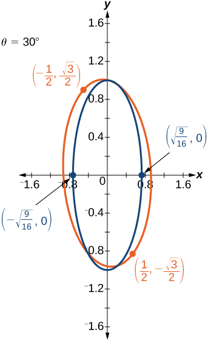
Solution
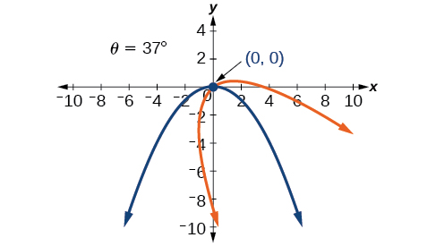
Solution
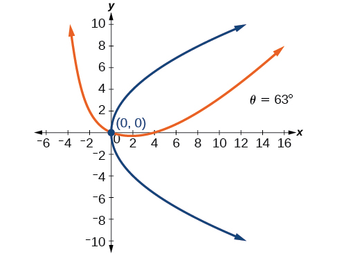
For the following exercises, determine the angle of rotation in order to eliminate the term. Then graph the new set of axes.
Solution

Solution
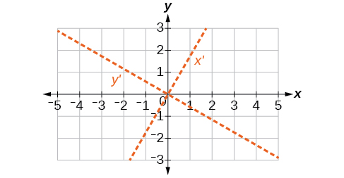
Solution
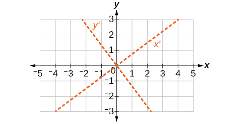
For the following exercises, determine the value of based on the given equation.
Given find for the graph to be a parabola.
Given find for the graph to be an ellipse.
Solution
Given find for the graph to be a hyperbola.
Given find for the graph to be a parabola.
Solution
Given find for the graph to be an ellipse.